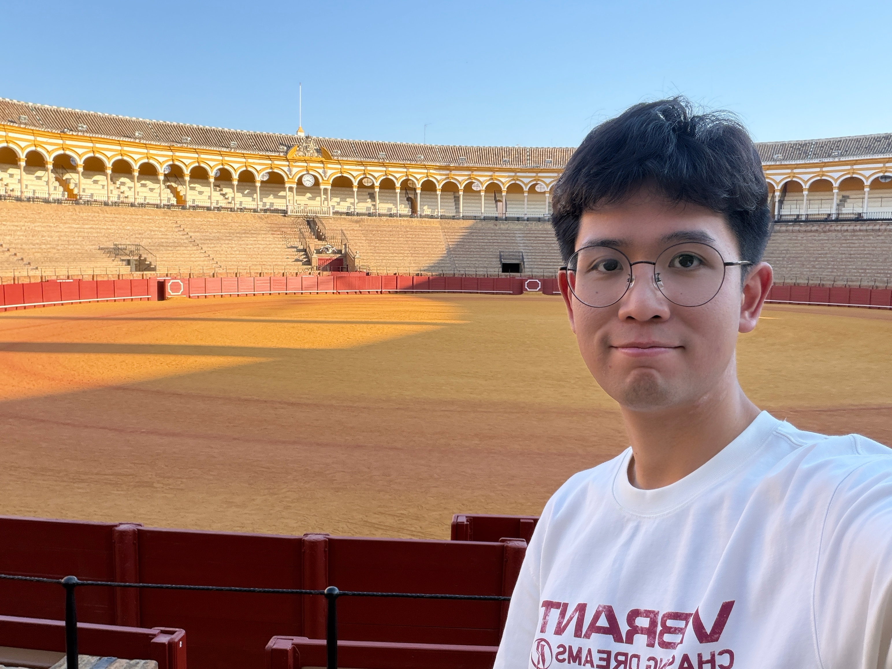
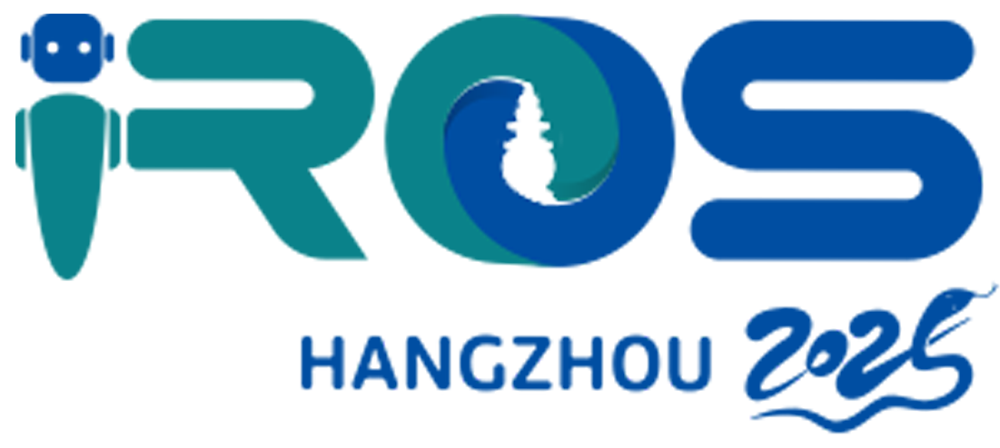
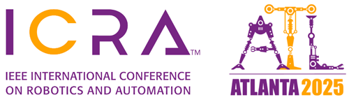

© Weiliang Deng 2025
|
 |
Weiliang Deng 邓伟亮Hi there 👋 I am a Second-year Master student in The School of Intelligent Systems Engineering at Sun Yat-sen University.
Now I am a member of Hardware and Intelligence (HI) Lab and working on Aerial Robots with Assoc. Prof. Ximin Lyu.
Previously, I worked as a Research Assistant at Shanghai AI Laboratory, where I conducted research in Embodied AI under the supervision of Yao Mu in the ScaleLab.
I obtained my bachelor's degree at Sun Yat-sen University in 2025.
|
[2026/09/16] Our preprint Prior Evolution and Task Alignment for Aerial Grasping is now available on arXiv!
[2026/01/27] Our FlyAware paper on inertia-aware aerial manipulation has been accepted by IEEE Robotics and Automation Letters (RA-L)!🎉
[2025/12/15] Delivered a talk at 非凸空间 — details here.
[2025/11/27] Our Aerial Grasping Paper has been published on IEEE Xplore!🎉
[2025/10/28] Our Whole-Body Motion Planning Paper has been published on IEEE Xplore!🎉
[2025/09/26] Our Whole-Body Motion Planning Paper has been accepted by IEEE Transactions on Robotics (T-RO) 2025!🔥
[2025/06/16] Our Paper has been accepted by

IROS 2025! See you in Hangzhou![2025/01/28] Our NDOB-Based Controller has been accepted by

ICRA 2025! See you in Atlanta!
© Weiliang Deng 2025